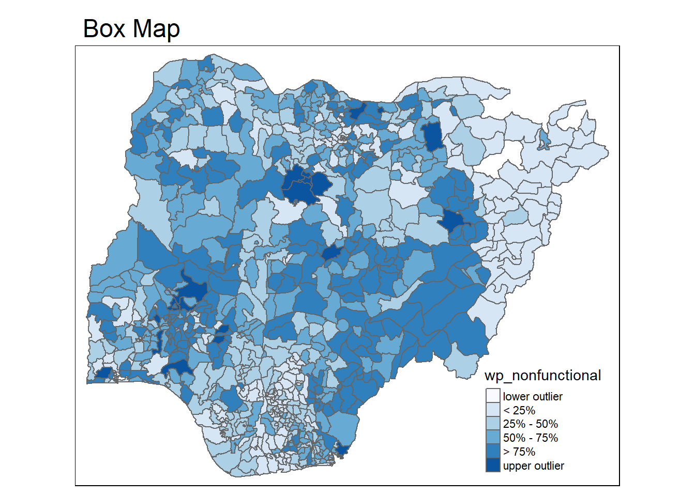

pacman::p_load(tidyverse, tmap, sf)Hands-on Exercise 7 - Analytical Mapping
1. Overview
In the third part of the seventh lesson, we learn to create analytical maps using the tmap package.
2. Getting Started
2.1. Installing and Loading Packages
We will use the following R packages in addition to tidyverse for this exercise:
The packages to be used can be installed and loaded into the R environment using the p_load() function from the pacman package:
2.2. The Data
We will use a dataset called NGA_wp.rds prepared by the Course Instructor. The dataset is a polygon feature dataframe that provides information on water points in Nigeria at the Local Government level.
2.2.1. Import Data
We will read the asaptial data into the R environment using the read_csv() function from the readrds package found in tidyverse.
nga_wp <- read_rds("data/rds/NGA_wp.rds")
list(nga_wp)[[1]]
Simple feature collection with 774 features and 8 fields
Geometry type: MULTIPOLYGON
Dimension: XY
Bounding box: xmin: 26662.71 ymin: 30523.38 xmax: 1344157 ymax: 1096029
Projected CRS: Minna / Nigeria Mid Belt
First 10 features:
ADM2_EN ADM2_PCODE ADM1_EN ADM1_PCODE
1 Aba North NG001001 Abia NG001
2 Aba South NG001002 Abia NG001
3 Abadam NG008001 Borno NG008
4 Abaji NG015001 Federal Capital Territory NG015
5 Abak NG003001 Akwa Ibom NG003
6 Abakaliki NG011001 Ebonyi NG011
7 Abeokuta North NG028001 Ogun NG028
8 Abeokuta South NG028002 Ogun NG028
9 Abi NG009001 Cross River NG009
10 Aboh-Mbaise NG017001 Imo NG017
geometry total_wp wp_functional wp_nonfunctional
1 MULTIPOLYGON (((548795.5 11... 17 7 9
2 MULTIPOLYGON (((547286.1 11... 71 29 35
3 MULTIPOLYGON (((1248985 104... 0 0 0
4 MULTIPOLYGON (((510864.9 57... 57 23 34
5 MULTIPOLYGON (((594269 1209... 48 23 25
6 MULTIPOLYGON (((660767 2522... 233 82 42
7 MULTIPOLYGON (((78621.56 37... 34 16 15
8 MULTIPOLYGON (((106627.7 35... 119 72 33
9 MULTIPOLYGON (((632244.2 21... 152 79 62
10 MULTIPOLYGON (((540081.3 15... 66 18 26
wp_unknown
1 1
2 7
3 0
4 0
5 0
6 109
7 3
8 14
9 11
10 22We can observe from above that the sf dataframe contains 774 records with 8 features.
3. Basic Choropleth Mapping
First, we plot a choropleth map showing the distribution of functional water points by local government area:
func_wp <- tm_shape(nga_wp) +
tm_fill("wp_functional",
n = 10,
style = "pretty",
palette = "Blues") +
tm_borders(lwd = 0.05,
col = "grey40") +
tm_layout(main.title = "Distribution of Functional Water Points by LGAs",
main.title.size = 0.7)
total_wp <- tm_shape(nga_wp) +
tm_fill("total_wp",
n = 10,
style = "pretty",
palette = "Blues") +
tm_borders(lwd = 0.05,
col = "grey40") +
tm_layout(main.title = "Distribution of Total Water Points by LGAs",
main.title.size = 0.7)
tmap_arrange(total_wp, func_wp)nonfunc_wp <- tm_shape(nga_wp) +
tm_fill("wp_nonfunctional",
n = 10,
style = "pretty",
palette = "Reds") +
tm_borders(lwd = 0.05,
col = "grey40") +
tm_layout(main.title = "Distribution of Functional Water Points by LGAs",
main.title.size = 0.7)
total_wp <- tm_shape(nga_wp) +
tm_fill("total_wp",
n = 10,
style = "pretty",
palette = "Blues") +
tm_borders(lwd = 0.05,
col = "grey40") +
tm_layout(main.title = "Distribution of Total Water Points by LGAs",
main.title.size = 0.7)
tmap_arrange(total_wp, nonfunc_wp)4. Choropleth Map for Rates
When plotting total count of a variable on a map, it does not take into account that the variable may not be equally distributed in space. Hence, we have to derive proportions (or rates) of the appearance of the variables.
4.1. Deriving Proportion of Functional and Non-Functional Water Points
First, we create additional columns in the dataframe to hold the derived percentage values. We can achieve this using the mutate function from the dplyr package.
nga_wp <- nga_wp %>%
mutate(pct_func = wp_functional/total_wp) %>%
mutate(pct_nonfunc = wp_nonfunctional/total_wp)4.2. Plotting Map for Rates
tm_shape(nga_wp) +
tm_fill("pct_func",
n = 10,
style = "pretty",
palette = "Blues",
legend.hist = TRUE) +
tm_borders(lwd = 0.05,
col = "grey40") +
tm_layout(main.title = "Distribution of Percentage of Functional Water Points by LGAs",
main.title.size = 0.7,
legend.outside = TRUE)tm_shape(nga_wp) +
tm_fill("pct_nonfunc",
n = 10,
style = "pretty",
palette = "Reds",
legend.hist = TRUE) +
tm_borders(lwd = 0.05,
col = "grey40") +
tm_layout(main.title = "Distribution of Percentage of Non-Functional Water Points by LGAs",
main.title.size = 0.7,
legend.outside = TRUE)5. Extreme Value Maps
Extreme value maps highlight the extreme values at the lower and upper end of the scale to identify outliers.
5.1. Perentile Maps
We can create percentile maps showing customised percentile categories. These categories, and it corresponding breakpoints can be determined using the base R quantile function.
5.1.1. Data Preparation
First, we exclude records with NA:
nga_wp <- nga_wp %>%
drop_na()Next, we create customised classifications:
percent <- c(0, 0.01, 0.1, 0.5, 0.9, 0.99, 1)
var <- nga_wp["pct_func"] %>%
st_set_geometry(NULL)
quantile(var[,1], percent) 0% 1% 10% 50% 90% 99% 100%
0.0000000 0.0000000 0.2169811 0.4791667 0.8611111 1.0000000 1.0000000 ::: callout-note - st_set_geometry(NULL) is used to drop the geometry field. Otherwise, the geometry field would be extracted together with the intended variables.
5.1.2. Creating get.var Function
We will next create our own function labelled as get.varto extract a variable as a vector from the sf dataframe. The function takes in two arguments - variable name, vname, and the source dataframe, df - and will return a vector with values v.
get.var <- function(vname,df) {
v <- df[vname] %>%
st_set_geometry(NULL)
v <- unname(v[,1])
return(v)
}5.1.3. Percentile Mapping Function
Next, we write a percentile mapping function that includes the get.var function previously created:
percentmap <- function(vnam, df, legtitle=NA, mtitle="Percentile Map") {
percent <- c(0,.01,.1,.5,.9,.99,1)
var <- get.var(vnam, df)
bperc <- quantile(var, percent)
tm_shape(df) +
tm_polygons() +
tm_shape(df) +
tm_fill(vnam,
title=legtitle,
breaks=bperc,
palette="Blues",
labels=c("< 1%", "1% - 10%", "10% - 50%", "50% - 90%", "90% - 99%", "> 99%")) +
tm_borders() +
tm_layout(main.title = mtitle,
main.title.size = 0.7,
title.position = c("right","bottom"))
}5.1.4. Testing the Function
percentmap("total_wp", nga_wp)5.2. Box Maps
A box map is an augmented quartile map, with an additional lower and upper category.
When lower outliers are present, the first breakpoint is the minimum value, the second breakpoint is at the lower fence.
When lower outliers are absent, the first breakpoint is at the lower fence, and the second breakpoint is at the minimum value.
First, we plot a boxplot to understand the distribution:
ggplot(data = nga_wp,
aes(x = "",
y = wp_nonfunctional)) +
geom_boxplot()
5.2.1. Create boxbreaks Function
We will create our own function labelled as boxbreaksto create breakpoints for a box map. The function takes in two arguments - vector, v, and a multiplier for IQR, mult - and will return a vector 7 box break points bb.
boxbreaks <- function(v, mult = 1.5) {
qv <- unname(quantile(v))
iqr <- qv[4] - qv[2]
upfence <- qv[4] + mult * iqr
lofence <- qv[2] - mult * iqr
# initialize break points vector
bb <- vector(mode="numeric",length=7)
# logic for lower and upper fences
if (lofence < qv[1]) { # no lower outliers
bb[1] <- lofence
bb[2] <- floor(qv[1])
} else {
bb[2] <- lofence
bb[1] <- qv[1]
}
if (upfence > qv[5]) { # no upper outliers
bb[7] <- upfence
bb[6] <- ceiling(qv[5])
} else {
bb[6] <- upfence
bb[7] <- qv[5]
}
bb[3:5] <- qv[2:4]
return(bb)
}5.2.2. Create get.var Function
We will next create our own function labelled as get.varto extract a variable as a vector from the sf dataframe. The function takes in two arguments - variable name, vname, and the source dataframe, df - and will return a vector with values v.
The output of the get.var function will be fed into the boxbreaks function.
get.var <- function(vname,df) {
v <- df[vname] %>%
st_set_geometry(NULL)
v <- unname(v[,1])
return(v)
}5.2.3. Testing the Functions
var <- get.var("wp_nonfunctional", nga_wp)
boxbreaks(var)[1] -56.5 0.0 14.0 34.0 61.0 131.5 278.05.2.4. Creating boxmap Function
Lastly, we create a boxmap function to create a tmap element with the output of the get.var and boxbreaks functions. This function takes in arguments - variable name, vname, source data frame, df, legend title, legtitle, map title, mtitle, and a multiplier for IQR, mult. The function returns a tmap element.
boxmap <- function(vnam, df,
legtitle=NA,
mtitle="Box Map",
mult=1.5){
var <- get.var(vnam,df)
bb <- boxbreaks(var)
tm_shape(df) +
tm_polygons() +
tm_shape(df) +
tm_fill(vnam,title=legtitle,
breaks=bb,
palette="Blues",
labels = c("lower outlier",
"< 25%",
"25% - 50%",
"50% - 75%",
"> 75%",
"upper outlier")) +
tm_borders() +
tm_layout(main.title = mtitle,
title.position = c("left", "top"))
}5.2.5. Plotting Box Map
tmap_mode("plot")
boxmap("wp_nonfunctional", nga_wp)